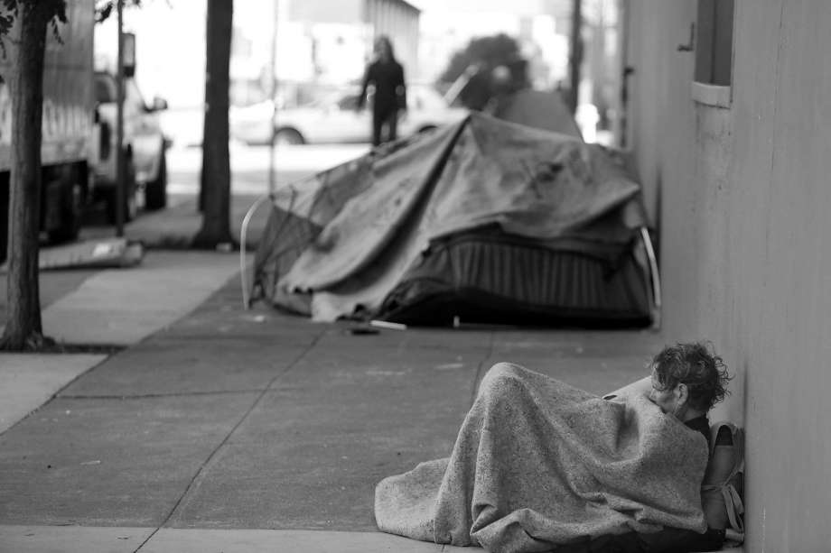
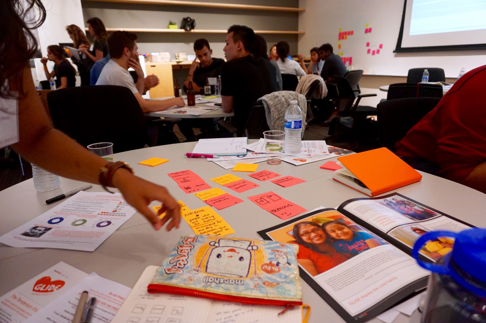
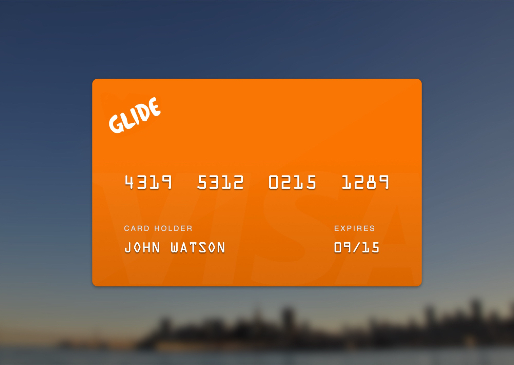
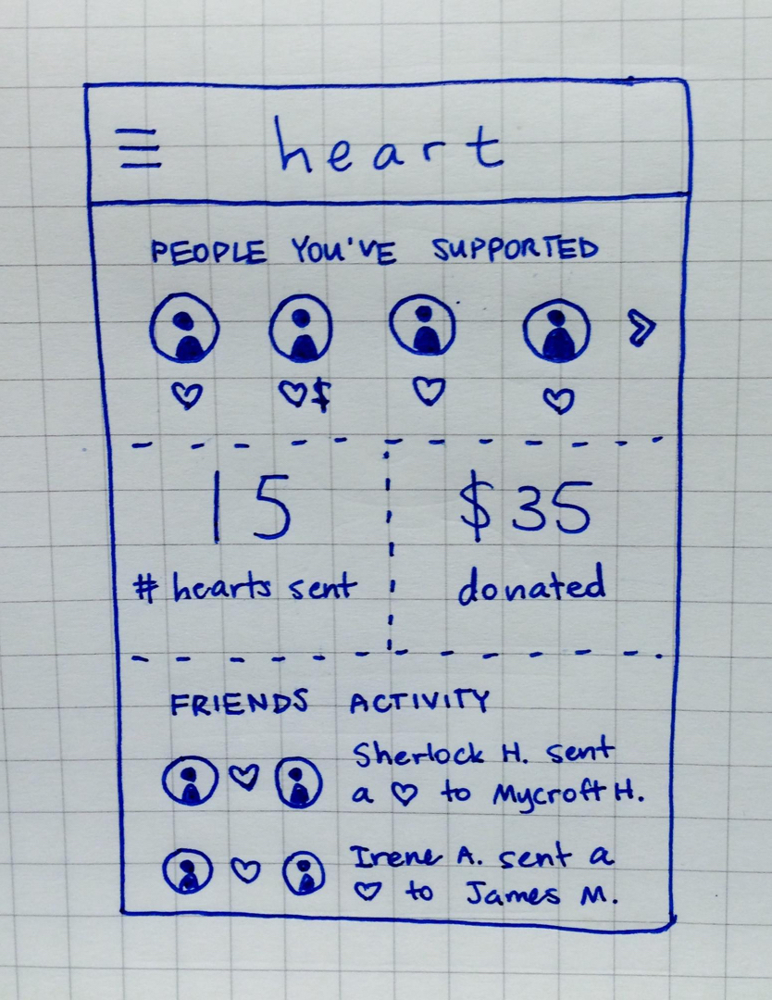

Heart
Summer 2015 · San Francisco, CA
Overview
Heart is multi-platform concept aimed at generating more compassion and empathy for the homeless. Consisting of a mobile app, connected debit card, and web portal, it seeks to create channels to support the homeless. It was created at the Andreesen Horowitz + IDEO Designathon, where our team was awarded first place for the idea.
Role
Contributed with brainstorming, ideation, brand development, and interaction design. Led team in developing presentation.
Timeline
3 hours
Teammates
Viraj Bindra, Katherine Liu, Janhavi Vartak
Categories
Design thinking, Brainstorming, Ideation, UX design, Storytelling
Context
Homelessness in San Francisco
In San Francisco, you walk past homeless people on a daily basis. Sometimes you interact with them, but for the most part you likely don't—you're too busy walking to work or your next errand. You feel some guilt as you try to sympathize with each man or woman you pass by.
Living homeless in San Francisco is something else. With gentrification sweeping the city and many passerby flat-out ignoring you, you feel discarded and dejected. You don't know where your next meal might come from, or where you'll be able to sleep safely tonight.
There are an estimated 7,000-10,000 people living homeless in San Francisco.
Many passerby want to help, but they often have reservations about handing out spare change. Homeless people don't want to be known as a singular label, and instead need help and support to get out of their situations. There's a disconnect here, where technology might be able to help.
Problem
Designing for the Homeless
For the designathon, we were tasked to create digital tools that might help to alleviate homelessness in San Francisco. To develop empathy for the stakeholders at hand, we dove deep into our research. We spoke to staff members at GLIDE, hearing their firsthand experiences in working with the homeless, as well as stories of people who were formerly homeless and now adjusted back into society. Before long, we had distilled a few insights:
- While passerby might not be able to donate, their support can still be meaningful.
- A donation is great, but someone who will listen to your story can be even better.
- To improve their situations, people need to feel loved in order to feel love for themselves.
Approach
Brainstorming a Solution
Jotting down our ideas, we wanted to focus on giving passerby a way of interacting and perhaps helping a homeless person they might pass on the street, in a way that didn't feel inconvenient or unsafe. Integrating RFID tags and beacons, we continued to ideate, picking and choosing the best concepts and suggestions to synthesize into a solution.
Getting a lot of ideas out quickly was key.
Solution
A Two-Way Platform
In three hours, we had come up with a concept for a digital tool that could enable both passerby and the homeless and hopefully improve the experience of a walking commute in San Francisco.
For Passerby
Imagine that, on your way to work, you pass someone on the street who asks you for change. Unfortunately, you don't have the time to dig through your wallet for a couple of dollars, but with the Heart mobile app you can send your support even after you've made it to the office.

A push notification prompts users to interact when passing.
In the app, you can see people you've passed and read about their story: where they're coming from, how they're feeling, and what they need. You can support them with a heart to let them know you care, and you can even donate or volunteer if you so choose.

Users can choose to support and donate to people they've passed at their convenience.
For the Homeless
Now put yourself in the place of the man or woman who was passed on the street. It's unlikely that you have a smartphone that you can load with apps. However, on your next stop by the homeless shelter, you can check in online. There, you can add a profile with a story and updates, but more importantly, you can see the people that have supported to you and donated to you over the course of the day.
Web portals at homeless shelters allow people to interact with their supporters.
And how are the phones of passerby able to know when someone in need of help is nearby? Once a homeless person has created a web portal for the first time, they receive a debit card equipped with a tag that phones can interact with. The debit card allows people to spend their donations at partner stores and eateries in the neighborhood (and not on drugs or alcohol), and their balance can easily be checked via SMS text.
Connected debit cards give the homeless a convenient and secure way to use donations.
Completing the Loop
Over time, as people's situations hopefully improve, updates will push to people that have supported them. And when you walk through the same neighborhoods day after day, you can know that the man asking for change on the corner has a name and a story, and that his life is changing for the better.

An update shows up for supporters in the form of a push notification.
Users can keep track of their support activity and that of friends.
Impact
Reception and Feedback
Hearing from both GLIDE staff and IDEO designers, they were impressed by the thoughtfulness of our end-to-end solution, and the incorporation of connected technologies into the mobile app and debit card. They also praised our awareness of the constraints at hand.

The team celebrates after our presentation!